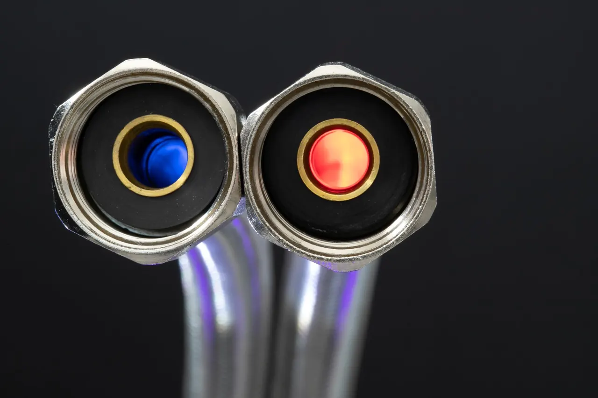

Leak detection services Greer SC homeowners trust
Every leak leaves a trail, and our job is to read it. We handle water leak detection Greer SC calls for slab leaks, pool leaks, underground lines and everyday plumbing drips.

- 5Services from one local team
- 2Areas served around Greer
- Look firstWe trace the leak before opening anything
- Test afterEvery repaired line gets pressure tested
Leak detection services Greer SC homeowners trust
Every leak leaves a trail, and our job is to read it. We handle water leak detection Greer SC calls for slab leaks, pool leaks, underground lines and everyday plumbing drips.
Water Leak Detection
We trace water line leaks and high water bills using acoustic microphones, moisture meters and pressure testing.
Pool Leak Detection
Losing an inch of water a day usually means a pool leak, not evaporation.
Slab Leak Detection
A warm spot on the floor or a spike in the water bill often points to a slab leak under your foundation.
Underground Leak Detection
Buried water and irrigation lines leak quietly until the ground stays soggy or the bill jumps.
Plumbing Leak Detection
Dripping supply lines, failing fittings and pinhole leaks in copper pipe waste water and grow mold behind cabinets.


How our leak detection process works
We keep it simple: find the leak, show you where it is, fix it, then prove the line holds.
-
Step 1
Call and questions
You call and tell us what you are seeing: a high water bill, a warm floor, a soggy yard, a running meter.
-
Step 2
On-site inspection
A tech walks the property with a moisture meter, pressure testing gauge and thermal imaging camera.

-
Step 3
Pinpoint and explain
We confirm the leak with the right tool, whether that is a tracer gas leak detector, pipe inspection camera or ultrasonic leak detector.

-
Step 4
Repair and line test
We repair the line with copper pipe, PEX tubing or PVC pipe and proper fittings, then pressure test the run again.

Leak detection Greer SC questions
These are the questions we get most from Greer homeowners and business owners. If yours is not here, call us and we will answer it straight.
Describe what you are seeing and we will point you to the right next step.
+18644286579You get a written price before we start.
We use acoustic microphones, thermal imaging cameras and pressure testing gauges on every call, hand you photos of what we found, and test the line after the repair. Ask any company what tools they bring and whether the inspection fee comes off the repair.
If water is coming through a floor or wall, shut off the main and call us at +1 864-428-6579. We will walk you through the shutoff and get a tech out fast.
Check three things: the tools they carry, whether they give a written price before opening anything, and whether they test the line after the repair. A real leak detection service in Greer SC will use electronic leak detection equipment like acoustic mics and thermal cameras, not just a flashlight and a guess. Ask for photos of the leak and the finished repair.
Yes. Slab leaks are one of the most common calls we run in Greer, and water leak detection works well on them. We scan the floor with a thermal imaging camera to find the warm line, confirm it with acoustic gear, and mark the repair point so we cut one small section instead of breaking up the whole slab. Most slab repairs are finished in a day.

Book leak detection Greer SC before the damage spreads
+18644286579A hidden leak costs more every day you wait. Call Greer Leak Detection Pros at +1 864-428-6579 for a same-day inspection, a written price, and a repair that gets tested before we leave.
Call Greer Leak Detection Pros
Call +1 864-428-6579 and tell us what you are seeing: a high water bill, a warm floor, a soggy yard, a running meter. You get a written price before we start and a line test before we leave.